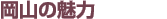
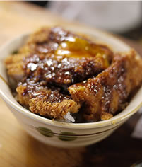

食文化（1）デミカツ丼
岡山の食文化を語る上ではずせないのが「デミカツ丼」（または「ドミカツ丼」）。
カツ丼と聞くと、丼に卵でとじたトンカツを載せるものを想像する方が多いが、岡山のカツ丼はカツにデミグラスソースがかかっているもの。さらにお店によっては、生卵の黄身だけをトッピングしている（写真）。
ちなみに岡山では、これがスタンダードなため、「デミカツ丼」とは呼ばず、「カツ丼」と呼ぶ。
多くのお店では、デミカツ丼とラーメン、デミカツ丼と卵とじのカツ丼などのように、小さい主食に小さい主食を加えたセットを用意している。これも岡山の特徴といえるだろう。
食文化（2）ままかり
岡山ではお祝いごとがあると、ままかり寿司を作る。
おいしくて食がすすみ、隣に「まま」（米飯の岡山方言）を借りに行く、ということから「ままかり」と名づけられた岡山県独特の美味として知られる小魚。酢漬けや、ままかり寿司などにするのが一般的だが、近年、酢漬け以外の楽しみ方も広がっている。